Русский
Русский English
English Оберхоф - 2022/2023
Оберхоф - 2022/2023
New
Old
18.02.2023 Оберхоф 2022/2023, Чемпионат мира, Эстафета 4х6 км, Женщины.
| # | Имя | Стрельба | = | Время | Время | ||
| 1 |
 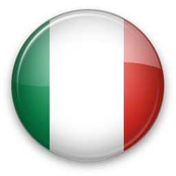
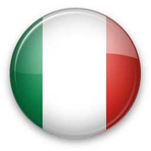
|
Италия | 5 | 0+0 0+2 | 0+2 | 1:14:39.7 0.0 | 0.0 1:14:39.7 |
| Самуэла Комола С. Комола | 3 | 0+0 0+0 | 0+0 | +5.7 | +5.7 | ||
| Доротея Вирер Д. Вирер | 1 | 0+0 0+1 | 0+1 | 36:52.0 | 36:52.0 | ||
| Ханна Аухенталлер Х. Аухенталлер | 1 | 0+0 0+1 | 0+1 | 56:19.0 | 56:19.0 | ||
| Лиза Виттоцци Л. Виттоцци | 1 | 0+0 0+0 | 0+0 | 1:14:39.7 | 1:14:39.7 | ||
| 2 |

|
Германия | 3 | 0+3 0+4 | 0+7 | 1:15:04.4 +24.7 | +24.7 1:15:04.4 |
| Ванесса Фогт В. Фогт | 1 | 0+0 0+0 | 0+0 | +12.8 | +12.8 | ||
| Ханна Кебингер Х. Кебингер | 4 | 0+2 0+2 | 0+4 | +42.8 | +42.8 | ||
| София Шнайдер С. Шнайдер | 2 | 0+1 0+2 | 0+3 | +5.6 | +5.6 | ||
| Дениз Херрманн-Викк Д.Х. Викк | 2 | 0+0 0+1 | 0+1 | +24.7 | +24.7 | ||
| 3 |

|
Швеция | 1 | 0+6 2+5 | 2+11 | 1:15:35.4 +55.7 | +55.7 1:15:35.4 |
| Линн Перссон Л. Перссон | 1 | 0+2 0+0 | 0+2 | 18:03.1 | 18:03.1 | ||
| Анна Магнуссон А. Магнуссон | 6 | 0+1 1+3 | 1+4 | +53.9 | +53.9 | ||
| Эльвира Карин Эберг Э.К. Эберг | 4 | 0+1 0+2 | 0+3 | +38.2 | +38.2 | ||
| Ханна Эберг Х. Эберг | 3 | 0+2 0+0 | 0+2 | +55.7 | +55.7 | ||
| 4 |
 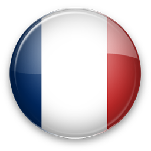
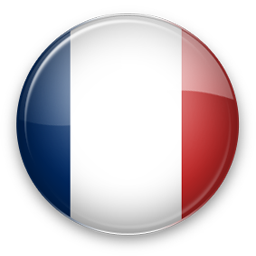
|
Франция | 2 | 0+4 1+8 | 1+12 | 1:16:11.3 +1:31.6 | +1:31.6 1:16:11.3 |
| Лу Жанмонно Л. Жанмонно | 5 | 0+0 0+3 | 0+3 | +14.0 | +14.0 | ||
| Анаис Шевалье-Буше А.Ш. Буше | 2 | 0+1 1+3 | 1+4 | +21.4 | +21.4 | ||
| Хлое Шевалье Х. Шевалье | 4 | 0+3 0+2 | 0+5 | +44.4 | +44.4 | ||
| Жюлья Симон Ж. Симон | 4 | 0+1 0+0 | 0+1 | +1.31.6 | +1.31.6 | ||
| 5 |
 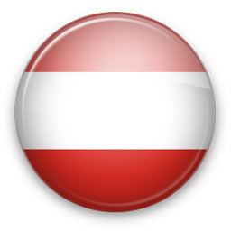
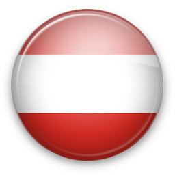
|
Австрия | 8 | 0+6 0+6 | 0+12 | 1:16:47.7 +2:08.0 | +2:08.0 1:16:47.7 |
| Дуня Здуч Д. Здуч | 9 | 0+1 0+3 | 0+4 | +46.8 | +46.8 | ||
| Анна Гандлер А. Гандлер | 6 | 0+1 0+2 | 0+3 | +1:15.9 | +1:15.9 | ||
| Анна Юппе А. Юппе | 5 | 0+3 0+1 | 0+4 | +1:44.1 | +1:44.1 | ||
| Лиза Тереза Хаузер Л.Т. Хаузер | 5 | 0+1 0+0 | 0+1 | +2:08.0 | +2:08.0 | ||
| 6 |


|
Норвегия | 4 | 0+4 4+9 | 4+13 | 1:17:00.6 +2:20.9 | +2:20.9 1:17:00.6 |
| Каролин-Оффигстад Кноттен К.О. Кноттен | 3 | 0+1 0+2 | 0+3 | +5.0 | +5.0 | ||
| Ингрид-Ландмарк Тандреволд И.Л. Тандреволд | 6 | 0+1 3+3 | 3+4 | +1:08.9 | +1:08.9 | ||
| Ида Лиен И. Лиен | 7 | 0+1 1+3 | 1+4 | +1:48.9 | +1:48.9 | ||
| Марте Олсбю Ройселанд М.О. Ройселанд | 6 | 0+1 0+1 | 0+2 | +2:20.9 | +2:20.9 | ||
| 7 |


|
Чехия | 7 | 0+4 4+9 | 4+13 | 1:17:24.8 +2:45.1 | +2:45.1 1:17:24.8 |
| Тереза Воборникова Т. Воборникова | 2 | 0+1 0+0 | 0+1 | +0.5 | +0.5 | ||
| Тереза Винкларкова Т. Винкларкова | 6 | 0+2 0+0 | 0+2 | +1:04.7 | +1:04.7 | ||
| Маркета Давидова М. Давидова | 4 | 0+0 1+3 | 1+3 | +43.8 | +43.8 | ||
| Люция Харватова Л. Харватова | 7 | 2+3 0+2 | 2+5 | +2:45.1 | +2:45.1 | ||
| 8 |


|
Швейцария | 6 | 0+6 1+9 | 1+15 | 1:17:25.3 +2:45.6 | +2:45.6 1:17:25.3 |
| Эми Басерга Э. Басерга | 6 | 0+0 0+3 | 0+3 | +39.0 | +39.0 | ||
| Аита Гаспарин А. Гаспарин | 8 | 0+1 0+1 | 0+2 | +1:25.8 | +1:25.8 | ||
| Элиза Гаспарин Э. Гаспарин | 7 | 0+3 0+2 | 0+5 | +1:48.0 | +1:48.0 | ||
| Лена Хекки Гросс Л.Х. Гросс | 8 | 0+2 1+3 | 1+5 | +2:45.6 | +2:45.6 | ||
| 9 | 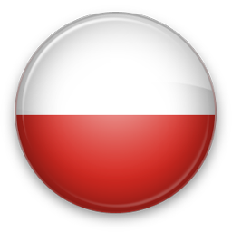 | Польша | 14 | 0+7 0+9 | 0+16 | 1:19:28.6 +4:48.9 | +4:48.9 1:19:28.6 |
| Анна Мака А. Мака | 13 | 0+0 0+2 | 0+2 | +57.9 | +57.9 | ||
| Камила Жук К. Жук | 10 | 0+3 0+2 | 0+5 | +1:44.8 | +1:44.8 | ||
| Йоанна Якела Й. Якела | 9 | 0+2 0+3 | 0+5 | +2:24.7 | +2:24.7 | ||
| Наталья Томашевска Н. Томашевска | 9 | 0+2 0+2 | 0+4 | +4:48.9 | +4:48.9 | ||
| 10 |
 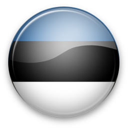
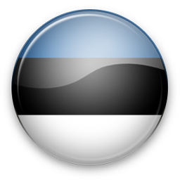
|
Эстония | 10 | 2+4 2+7 | 4+11 | 1:20:00.5 +5:20.8 | +5:20.8 1:20:00.5 |
| Регина Эрмитс Р. Эрмитс | 15 | 2+3 0+1 | 2+4 | +2:36.3 | +2:36.3 | ||
| Туули Томингас Т. Томингас | 16 | 0+0 1+3 | 1+3 | +3:45.3 | +3:45.3 | ||
| Сюзан Кюэльм С. Кюэльм | 14 | 0+1 1+3 | 1+4 | +4:40.4 | +4:40.4 | ||
| Йоханна Талихярм Й. Талихярм | 10 | 0+0 0+0 | 0+0 | +5:20.8 | +5:20.8 | ||
| 11 | Канада | 11 | 0+2 1+8 | 1+10 | 1:20:03.4 +5:23.7 | +5:23.7 1:20:03.4 | |
| Надя Мозер Н. Мозер | 9 | 0+0 0+2 | 0+2 | +46.4 | +46.4 | ||
| Эмили Диксон Э. Диксон | 14 | 0+0 1+3 | 1+3 | +3:38.3 | +3:38.3 | ||
| Бенита Пайффер Б. Пайффер | 12 | 0+0 0+1 | 0+1 | +4:30.8 | +4:30.8 | ||
| Эмма Ландер Э. Ландер | 11 | 0+2 0+2 | 0+4 | +5:23.7 | +5:23.7 | ||
| 12 |
 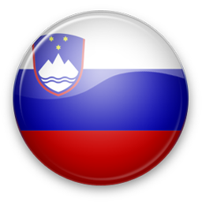
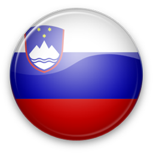
|
Словения | 15 | 0+3 3+9 | 3+12 | 1:20:18.0 +5:38.3 | +5:38.3 1:20:18.0 |
| Зива Клеменчич З. Клеменчич | 12 | 0+0 0+2 | 0+2 | +57.3 | +57.3 | ||
| Лена Репинц Л. Репинц | 11 | 0+1 0+3 | 0+4 | +2:10.3 | +2:10.3 | ||
| Анамария Лампич А. Лампич | 15 | 0+1 3+2 | 3+3 | +4:42.3 | +4:42.3 | ||
| Полона Клеменчич П. Клеменчич | 12 | 0+1 0+2 | 0+3 | +5:38.3 | +5:38.3 | ||
| 13 |

|
Финляндия | 9 | 1+6 0+5 | 1+11 | 1:20:37.6 +5:57.9 | +5:57.9 1:20:37.6 |
| Суви Минккинен С. Минккинен | 7 | 0+0 0+1 | 0+1 | +29.3 | +29.3 | ||
| Мари Эдер М. Эдер | 5 | 0+3 0+0 | 0+3 | +54.8 | +54.8 | ||
| Анастасия Киннунен А. Киннунен | 10 | 1+3 0+2 | 1+5 | +3:54.4 | +3:54.4 | ||
| Эрика Янкя Э. Янкя | 13 | 0+0 0+2 | 0+2 | +5:57.9 | +5:57.9 | ||
| 14 |


|
Украина | 12 | 0+4 3+4 | 3+8 | 1:21:52.8 +7:13.1 | +7:13.1 1:21:52.8 |
| Анастасия Меркушина А. Меркушина | 14 | 0+3 0+0 | 0+3 | +1:04.4 | +1:04.4 | ||
| Дарья Блашко Д. Блашко | 13 | 0+1 0+0 | 0+1 | +3:23.3 | +3:23.3 | ||
| Любовь Кипяченкова Л. Кипяченкова | 11 | 0+0 0+1 | 0+1 | +4:04.5 | +4:04.5 | ||
| Елена Билосюк Е. Билосюк | 14 | 0+0 3+3 | 3+3 | +7:13.1 | +7:13.1 | ||
| 15 |

|
США | 13 | 0+8 1+7 | 1+15 | 1:22:35.7 +7:56.0 | +7:56.0 1:22:35.7 |
| Дидра Ирвин Д. Ирвин | 15 | 0+3 1+3 | 1+6 | +2:10.2 | +2:10.2 | ||
| Джоанн Рид Д. Рид | 12 | 0+2 0+1 | 0+3 | +3:02.3 | +3:02.3 | ||
| Хлое Левинс Х. Левинс | 12 | 0+1 0+1 | 0+2 | +4:19.1 | +4:19.1 | ||
| Келси Джоан Дикинсон К. Д. Дикинсон | 15 | 0+2 0+2 | 0+4 | +7:56.0 | +7:56.0 | ||
| 16 |

|
Япония | 16 | 0+5 0+7 | 0+12 | 1:23:18.3 +7:56.0 | +7:56.0 1:23:18.3 |
| Фуюко Тачизаки Ф. Тачизаки | 11 | 0+0 0+2 | 0+2 | +53.7 | +53.7 | ||
| Аои Сато А. Сато | 14 | 0+3 0+3 | 0+6 | +3:14.3 | +3:14.3 | ||
| Асука Хачисука А. Хачисука | 14 | 0+2 0+0 | 0+2 | +4:31.6 | +4:31.6 | ||
| Хикару Фукуда Х. Фукуда | 16 | 0+0 0+2 | 0+2 | +8:38.6 | +8:38.6 |


Спонсоры Федерации биатлона Украины